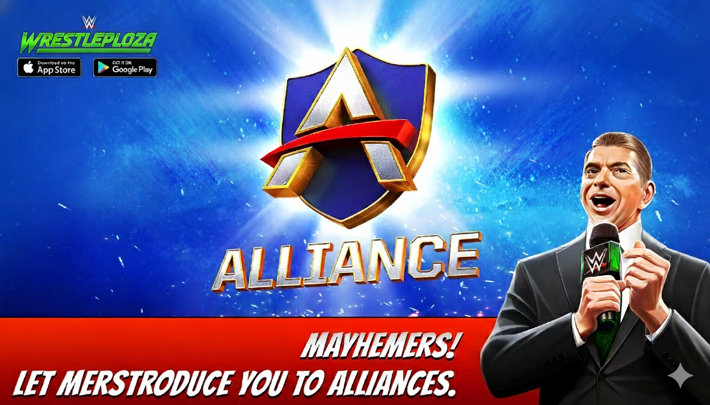
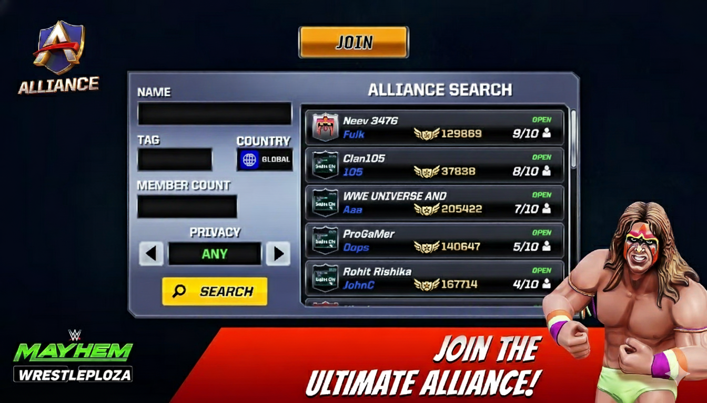

WRESTLEPLOZA ALLIANCE
WRESTLEPLOZA brings to you the much-awaited and anticipated Alliance Mode. Let's start with a very basic understanding of this mode.
A group of Mayhemers fighting towards a common goal is called Alliance. The common goal here is to top the Global Alliance Leaderboard. The Alliance Mode opens for everyone at Level 5. Alliances are created for 125 Gold Bars, and can compete in Exclusive Alliance Events. An Alliance can have a maximum of 10 members and a minimum of 1.
Players who are a part of an Alliance are all expected to contribute towards the Alliance by participating in Alliance Events and completing them to gain Point Multipliers. Point Multipliers are applicable to each and every member of the Alliance. Every contributing member of an Alliance gets their fair share of rewards that they receive on achieving specific Milestones and Ranks. Players can also donate Gifts to their teammates who might be in the requirement of an item.
To join an Alliance, you can go to the 'Alliance' tab and scroll through the recommended options. If you are not in an Alliance, you cannot access Alliance Chat, nor can you reap the benefits of the Hustle Currency.
ALLIANCE HIERARCHY AND RIGHTS
There are three ranks in an Alliance: Chairman, General Manager, and Superstars. To know more about them and their respective roles in an Alliance,see below all details:-
An Alliance generally has three designations:
CHAIRMAN
In most cases, the Chairman will be the one who created the Alliance. The Chairman has the authority to promote Superstars in their team, to the General Manager position. The Chairman cannot be kicked out of their Alliance. The Chairman can also transfer its authority directly to a Superstar and gets demoted to the Superstar rank by default. The Chairman can promote all the other Superstars to the rank of General Manager if they intend to. A Chairman can use Alliance Point Multipliers earned by anyone in the Alliance. A Chairman can Invite anyone to join their Alliance and is the only one in the Alliance who can reject or accept Join Requests. A Chairman can Kick anyone out from the Alliance.
GENERAL MANAGER
IA General Manager is always a Superstar who got promoted to that position by the Chairman. If there are several General Managers in an Alliance and the Chairman decides to leave the group, the highest-ranking General Manager takes on the Chairman position. A General Manager can also use Alliance Point Multipliers earned by anyone in the Alliance and can send out Invites to player's to join their Alliance. General Managers cannot accept or reject Join Requests. General Managers can Kick any of the Superstars out of the Alliance.
SUPERSTARS
Mostly Superstars are players who joined an Alliance (Open or Closed). In some cases, the Chairman may decide to directly exchange positions with a Superstar making that Superstar, the Chairman. In case the Chairman decides to leave the Alliance and there's no General Manager appointed, the Superstar with the highest rating takes on the position. A Chairman can appoint all Superstars to the General Manager position, so there's a possibility that there are no Superstars in an Alliance. A Superstar can only use the Point Multipliers earned by them. They cannot send Invites or Reject/Accept Join Requests. Superstars cannot Kick anyone out of the Alliance but they can choose to Leave it whenever they want.
Now that you know what are the diffrent positions in an Alliance and what are their rights, it's for you to take your role seriously and create the best synergy with your team-mates and get to the top spot on the leaderboard. Make decisions that are Alliance-led and not individual, as that's what the overarching idea of the Alliance Mode is - Working together to be the Best.
BE A PART OF THE ULTIMATE ALLIANCE
To get on the top spot on Leaderboard requires the Ultimate team of Mayhemer's. A team is more about its players that just the captain. In this case, not everyone needs to be a Chairman. A team requires Superstars who can perform and take their Alliance to victory. Don't just join any Alliance. Look out for Alliances that match your vision and portray the same enthusiasm and passion that you possess.
When you tap on the Join Tab certain fields appear that help you search for your perfect Alliance. Searching forms the basis of Joining one. There are several ways in which one can search:
- BY RECOMMENDATIONS -
- The right panel of the Join tab features a few Alliances that are available for you to join. You can see the Alliance Name and Tag along with their Alliance Points and the no. of players in that team.
- BY NAME -
- If you already know of an Alliance that you wish to join, you can fill in the Alliance Name in the Name field and try searching for it. You might know of an Alliance from the leaderboards or directly from a friend.
- BY TAG -
- Similar to searching by name, Tags also help you reach for the Alliance that you seek.
- BY COUNTRY -
- You might wish to join an Alliance from a particular Country. It might be your own country or maybe some other. Tap on the Country field to select the country of your choice and search. All the Alliances existing in that country will be shown on the result screen. "Global" Search is set as the default unless you choose to search on the basis of the Country.
- BY MEMBER COUNT -
- Many of your searches might showcase already 10 member teams that can't be joined. Well, you can also send requests to join a 10 member alliance. If you are a stronger alternative the Chairman might consider you. The Member Count field lets you fill in a number and showcases all the Alliances with those many members or below. Choose from what you see.
- BY PRIVACY -
- You can also select Privacy as Closed or Open to search for Alliances. There's another option called "Any" if the privacy status doesn't matter to you.
- BY FILTERING RESULTS -
- You can choose to narrow down your search results for more specific searches by opting for mutliple choices - Country, Member Count, and Privacy options; all at once.
Getting search results doesn't yet convert into finding the Alliance that you are looking for. Search results will churn out several options close to your liking but you have to look into the options closely. Check out the Alliance info and based on that you can decide to either further evaluate the Alliance or reject it. Further evaluation of ana Alliance can be done by looking at the existing members' profiles. The Player Profile sheds enormous light on the players in terms of their performance and their roster. To know more about Player Profiles, click here. You can also decide to join the Alliance or send a request to join a Closed Alliance if you have zeroed down on the one where you find yourself to be a good fit.
Joining the alliance is just the start, but the right start is really important. The right Alliance will also depend on how you or your teammates collaborate and communicate. How well do you synergize towards the common vision? If at any time you feel that there's a gap between you and your alliance's goals you can opt to quit it.
You always join an Alliance as Superstars. Depending on your performance and participation and communication, the Chairman can promote you to the General Manager position in the Alliance who enjoys certain rights above the superstars. The inter-alliance hierarchy is a different topic.
TOP THE ALLIANCE LEADERBOARD
The ultimate goal of the Alliance Mode is to lead the Alliance Leaderboard, and Creating or Joining an Alliance is the key to achieve that objective. We have already discussed the major factors that help you become a part of a great Alliance. But that's just the start of the competition. Points don't come to you because you belong to an Alliance. You need to earn them. Together!
The ultimate goal of the Alliance Mode is to lead the Alliance Leaderboard, and Creating or Joining an Alliance is the key to achieve that objective. We have already discussed the major factors that help you become a part of a great Alliance. But that's just the start of the competition. Points don't come to you because you belong to an Alliance. You need to earn them. Together!
Point Multipliers can be earned by all the Alliance Members by completing various challenges in Alliance Quest during an Alliance Season. Anyone can apply the individual Point Multipliers that they have earned. A General Manager can activate Point Multipliers earned by them individually as well as those of Superstars. Whereas the Chairman can activate the Point Multipliers earned by any of its Alliance Members. Every Alliance Season comes with a set of Featured Superstars. Take those featured superstars to win matches and add bonus points to your score. Applying Point Multipliers over the bonus points will help you boost your score considerably. Activating Point Multipliers is crucial to scoring high, so strategize it well with discussions among your Alliance Members.
Participating in Alliance Events rewards you with Hustle - The exclusive Alliance Currency. Exchange Hustle to get your favorite WWE Superstars and unique items or use them to enter special events. Advancing in Alliance Events also unlock various Milestone Rewards and Rank Rewards during an Alliance Season. Milestone Rewards can be unlocked by scoring the points set to reach that milestone. Enter a rank bracket by playing Alliance Events and get Rank Rewards. Higher Rank Brackets yield better Rewards.
There are two Leaderboards in the Alliance Mode. The Season Leaderboard showcases the standing of an Alliance in a particular Season. It resets at the beginning of every Alliance Season. The Global Leaderboard is your Alliance ranking across all the Alliance Seasons. It considers the cumulative score of an Alliance since it's formation. Use the Alliance Chat to communicate among your Alliance Members, create strategies and take decisions to score maximum points to top the Leaderboards. You can also help the other members in your Alliance by sending them Gifts.
So, the path to the top of the Leaderboard is quite straight forward but not at all easy. Create or become part of a strong Alliance. Play as many Alliance Matches as possible. Establish good communication to make critical decisions and put them in effect. Do not compromise with your Alliance by retaining players who don't contribute to the collective cause. Take your Alliance to the top and take a bow!